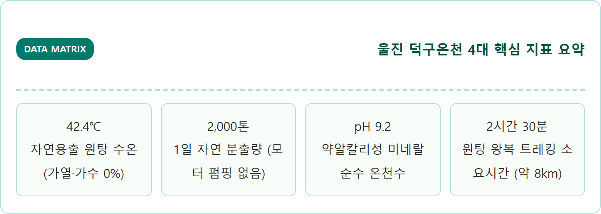
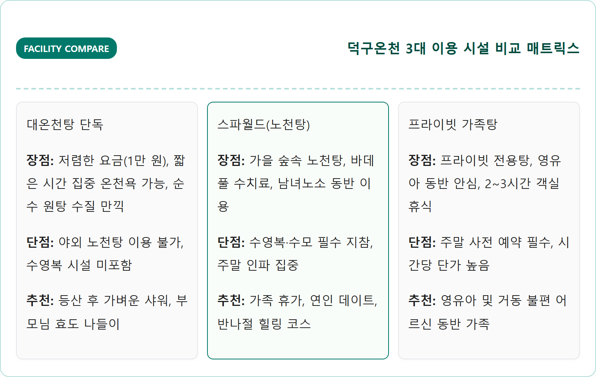
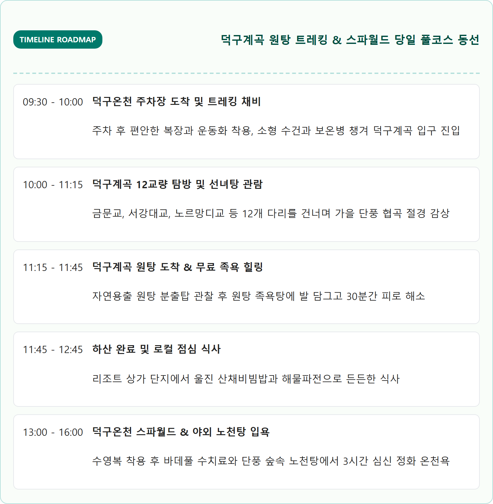

경북 울진 덕구온천 자연용출 노천탕 이용 팁 — 응봉산 원탕 계곡 트레킹과 가족탕 예약 방법
국내 유일의 순수 자연용출온천인 경북 울진 덕구온천은 인위적인 모터 펌핑 없이 42.4℃의 온천수가 하루 약 2,000톤씩 지표면으로 솟구치는 대한민국 최고의 힐링 명소입니다.
응봉산 자락 덕구계곡 깊은 숲속에서 뿜어져 나오는 약알칼리성 온천수는 데우거나 식히지 않고 원탕 그대로 스파월드와 노천탕으로 직결되어 환절기 피부 보습과 관절 통증 완화에 탁월한 효능을 자랑합니다. 특히 12개의 세계 유명 교량을 축소해 만든 덕구계곡 트레킹 코스를 걸어 원탕 족욕탕을 체험한 뒤 야외 노천탕과 프라이빗 가족탕에서 즐기는 피로 회복은 가을과 겨울 경북 동해안 여행의 정점으로 꼽힙니다.
📷 AI 대표 메인 썸네일 생성 영역images/261025/1_travel_uljin_deokgu_hot_spring_nature_spa_1.png
A photorealistic, ultra-high-detail eye-level photograph of Deokgu Hot Spring outdoor open-air mineral bath nestled in the autumn valley of Eungbongsan Mountain, Uljin, South Korea. Crystal clear steaming thermal mineral water gently overflowing from smooth natural granite rock pools surrounded by vibrant red, orange, and golden autumn foliage. Gentle warm steam rising into crisp, cool mountain morning air. Traditional Korean pine trees and wooden walking deck in the soft background. Golden morning sunlight filtering through autumn trees, cinematic warm lighting, high dynamic range, 8k resolution, authentic Korean autumn scenery, 1:1 aspect ratio.
경북 울진 응봉산 자락 덕구온천의 가을 단풍 숲속 야외 노천탕 풍경 / AI 제작 이미지
01 | 덕구온천 핵심 요약 — 국내 유일 자연용출 온천과 응봉산 원탕의 특징
경북 울진군 북면 덕구온천로에 자리 잡은 덕구온천은 국내 수백 곳의 온천 지구 중 유일하게 지하 동력을 이용한 모터 펌핑을 전혀 하지 않는 순수 자연용출온천(Natural Gushing Hot Spring)입니다.
일반적인 온천들이 지하 수백 미터에서 모터로 물을 끌어올려 보일러로 다시 가열해 공급하는 방식인 반면, 덕구온천은 응봉산(999m) 지하 약 4,000m의 마그마 지열 지대에서 자연적인 압력으로 지표면을 뚫고 솟구쳐 오르는 신비로운 온천수입니다.
원탕에서 뿜어져 나오는 온천수의 수온은 사계절 내내 정확히 42.4℃를 유지하고 있어, 인위적으로 가열하거나 차가운 지하수를 섞지 않고 100% 원탕수 그대로 공급됩니다. 하루 용출량이 약 2,000톤에 달하여 항상 맑고 신선한 약알칼리성(pH 9.1~9.3) 온천수가 욕조를 가득 채우며 순환합니다.
덕구온천수에는 중탄산나트륨, 칼슘, 칼륨, 마그네슘, 규산 등 유익한 미네랄 성분이 풍부하게 함유되어 있어 입욕 후 비누칠을 하지 않아도 피부가 매끄럽고 윤기 나게 정돈되는 독특한 매력을 지니고 있습니다.

울진 덕구온천 핵심 수치 매트릭스 / 인포그래픽 카드
02 | 덕구온천 스파월드와 노천탕 시설 — 테라피풀과 야외 이벤트탕
덕구온천 리조트 본관 내에 조성된 스파월드는 단순한 대중목욕탕을 넘어 다양한 수치료 시설과 천연 노천 스파가 결합된 종합 웰니스 휴양 공간입니다.
실내 액션스파 구역에는 강력한 수압으로 뭉친 어깨와 허리 근육을 풀어주는 바데풀, 넥샤워, 기포욕, 보디마사지 제트 시설이 체계적으로 갖추어져 있어 장거리 운전이나 트레킹 후 지친 몸을 이완하는 데 최적화되어 있습니다.
특히 사계절 인기 있는 야외 노천온천 구역은 응봉산의 울창한 단풍 숲과 웅장한 계곡 협곡을 정면으로 마주하며 입욕할 수 있도록 설계되어 있습니다. 차가운 가을바람을 얼굴에 맞으며 따뜻한 온천수에 몸을 담그는 묘미는 자연용출온천의 백미입니다.
야외 노천탕에는 천연 약재와 아로마를 활용한 자스민탕, 레몬탕, 히노끼 원목탕, 폭포수탕 등이 다양하게 마련되어 있어 취향에 맞춰 피로를 풀 수 있으며, 어린이를 위한 키즈 스플래시 풀도 완비되어 있어 온 가족이 함께 즐기기에 부족함이 없습니다.
03 | 2026 이용 요금표와 할인 예매 팁 — 대온천탕 vs 스파월드 vs 프라이빗 가족탕
덕구온천은 방문 목적에 따라 지하 1층 대온천탕만 이용하는 코스, 야외 노천탕과 바데풀이 포함된 스파월드를 이용하는 코스, 그리고 객실형 프라이빗 가족탕을 이용하는 코스로 명확하게 구분됩니다.
2026년 기준 현장 정상 요금 대비 네이버 예약이나 공식 리조트 온라인 회원 예매를 이용하면 20~25% 상시 할인이 적용되므로 출발 전 사전 모바일 예매를 진행하는 것이 필수적입니다.
구분
대온천탕 (사우나)
스파월드 (노천탕 포함)
프라이빗 가족탕 (특실 기준)
이용 대상
순수 목욕·온천 사우나
실내 바데풀 + 야외 노천탕
독립 객실 + 대형 히노끼/월풀
대인 요금 (현장)
10,000원
주중 24,000원 / 주말 30,000원
2시간 기준 60,000원~80,000원
소인 요금 (현장)
7,000원
주중 16,000원 / 주말 20,000원
기준 인원 초과 시 1인 10,000원
복장 규정
일반 목욕탕 복장 (나체)
수영복 + 수영모(캡모자 가능)
개인 자유 복장 (객실형)
예매 팁
투숙객 30% 현장 할인
네이버 예약 시 20~25% 즉시 할인
공식 홈페이지 사전 유선·온라인 예약

덕구온천 시설별 장단점 비교 매트릭스 / 인포그래픽 카드
04 | 응봉산 덕구계곡 원탕 트레킹 코스 — 12개 세계 명교와 족욕탕 왕복 2시간
덕구온천을 진정으로 경험하는 가장 완벽한 방법은 입욕 전에 리조트 뒤편으로 이어지는 덕구계곡 숲길을 따라 '자연용출 원탕'까지 트레킹을 다녀오는 것입니다.
덕구계곡 트레킹 코스는 편도 약 4km, 왕복 약 8km 구간으로 조성되어 있으며, 완만한 평탄 데크길과 흙길이 이어져 남녀노소 누구나 트레킹화나 편안한 운동화만 착용하면 부담 없이 걸을 수 있는 힐링 로드입니다.
이 트레킹로의 명물은 계곡을 건널 때마다 차례로 나타나는 '12개의 세계 유명 교량 미니어처'입니다. 미국 샌프란시스코의 금문교, 영국 런던의 타워브리지, 호주 시드니의 하버브리지, 프랑스 노르망디교 등 세계 각국의 상징적 다리를 정교하게 재현해 놓아 걸음마다 색다른 사진 포인트를 제공합니다.
트레킹로의 종착점인 덕구계곡 원탕 지점에 도착하면 지표면에서 모락모락 김이 피어오르며 온천수가 뿜어져 나오는 웅장한 원탕 분출탑과 야외 무료 족욕체험장을 만날 수 있습니다. 1시간 남짓 걸어온 뒤 42.4℃의 따뜻한 원탕수에 발을 담그면 발바닥의 뭉친 근육과 피로가 순식간에 녹아내립니다.

덕구계곡 원탕 트레킹 & 온천욕 타임라인 / 인포그래픽 카드
05 | 덕구온천 가족탕(프라이빗 스파룸) 이용 안내 — 객실 구조와 예약 팁
대중탕 이용이 부담스러운 영유아 동반 가족이나 거동이 불편하신 어르신을 모신 여행객에게는 덕구온천 프라이빗 스파룸(가족탕)이 훌륭한 대안이 됩니다.
프라이빗 스파룸은 일반 호텔 객실 구조에 대형 온천 욕조가 결합된 형태로 구성되어 있습니다. 기본실과 특실로 나뉘며, 특실의 경우 성인 4명 이상이 동시에 들어가도 넉넉한 대형 히노끼(편백나무) 욕조 또는 고급 대리석 월풀 욕조가 완비되어 있습니다.
객실 내에는 푹신한 침대와 소파, TV, 파우더룸, 독립 샤워실, 헤어드라이어 및 고급 어메니티가 완비되어 있어 온천욕 중간중간 객실에서 편안하게 휴식을 취하거나 낮잠을 즐길 수 있습니다.
가족탕은 기본 2시간 또는 3시간 단위로 대여되며, 주말이나 가을 성수기에는 일주일 전부터 예약이 마감되는 경우가 빈번하므로 덕구온천 공식 홈페이지나 대표 유선 전화로 사전 잔여 타임을 확인하고 예약해야 합니다.
06 | 대중교통 및 자가용 방문 코스 — 북면 부구터미널 농어촌버스 시간표
울진 덕구온천은 경북 최북단 산악 지대에 위치해 있어 방문 전 교통편을 정확히 파악하는 것이 중요합니다.
자가용을 이용할 경우 동해고속도로 삼척IC 또는 중앙고속도로 영주IC를 거쳐 울진 북면 방면으로 진입하며, 최근 36번 국도(봉화-울진 직선화 구간) 개통으로 수도권과 충청권에서의 접근 시간이 과거 대비 약 40분 이상 대폭 단축되었습니다.
대중교통을 이용할 경우 가장 핵심적인 환승 거점은 '울진 북면 부구버스터미널'입니다. 동서울터미널이나 포항, 강릉에서 시외버스를 타고 부구터미널에 하차한 뒤, 터미널 앞에서 덕구온천행 농어촌버스로 환승하면 약 15~20분 만에 리조트 로비 앞까지 도착할 수 있습니다.